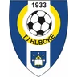
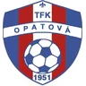
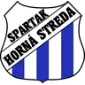

Tabuľky
Sezóna 2026/27. Poradie podľa Sportnetu, náš tím je zvýraznený.
A-mužstvo
Stránka tímuV. liga Severozápad
| # | Tím | Z | V | R | P | Skóre | B |
|---|---|---|---|---|---|---|---|
| 1. | 15 | 10 | 3 | 2 | 30:15 | 33 | |
| 2. | 15 | 10 | 3 | 2 | 44:22 | 33 | |
| 3. | 15 | 10 | 1 | 4 | 29:12 | 31 | |
| 4. | 15 | 8 | 5 | 2 | 36:20 | 29 | |
| 5. | 15 | 8 | 4 | 3 | 35:20 | 28 | |
| 6. | 15 | 7 | 3 | 5 | 40:18 | 24 | |
| 7. | 15 | 7 | 3 | 5 | 23:18 | 24 | |
| 8. | 15 | 7 | 3 | 5 | 39:24 | 24 | |
| 9. | 15 | 6 | 5 | 4 | 30:20 | 23 | |
| 10. | 15 | 6 | 3 | 6 | 28:33 | 21 | |
| 11. | 15 | 5 | 3 | 7 | 18:33 | 18 | |
| 12. | 15 | 4 | 3 | 8 | 19:37 | 15 | |
| 13. | 15 | 3 | 3 | 9 | 20:40 | 12 | |
| 14. |  TJ Družstevník Hlboké | 15 | 2 | 2 | 11 | 19:34 | 8 |
| 15. | 15 | 2 | 2 | 11 | 8:35 | 8 | |
| 16. |  Trenčiansky Futbalový Klub Opatová | 15 | 1 | 2 | 12 | 13:50 | 5 |
B-mužstvo
Stránka tímuVIII. liga ObFZ Trnava
| # | Tím | Z | V | R | P | Skóre | B |
|---|---|---|---|---|---|---|---|
| 1. | 13 | 11 | 2 | 0 | 45:12 | 35 | |
| 2. | 13 | 9 | 2 | 2 | 52:20 | 29 | |
| 3. | 13 | 9 | 1 | 3 | 43:19 | 28 | |
| 4. | 13 | 8 | 2 | 3 | 28:15 | 26 | |
| 5. | 13 | 7 | 0 | 6 | 30:31 | 21 | |
| 6. | 13 | 6 | 3 | 4 | 42:25 | 21 | |
| 7. | 13 | 4 | 4 | 5 | 26:36 | 16 | |
| 8. | 13 | 5 | 1 | 7 | 24:30 | 16 | |
| 9. | 13 | 5 | 1 | 7 | 29:35 | 16 | |
| 10. | 13 | 4 | 4 | 5 | 30:24 | 16 | |
| 11. | 13 | 4 | 2 | 7 | 27:33 | 14 | |
| 12. | 13 | 3 | 2 | 8 | 16:38 | 11 | |
| 13. | 13 | 1 | 2 | 10 | 10:49 | 5 | |
| 14. | 13 | 1 | 2 | 10 | 12:47 | 5 |
U15 Starší žiaci
Stránka tímuIV. liga starších žiakov ObFZ Trnava
| # | Tím | Z | V | R | P | Skóre | B |
|---|---|---|---|---|---|---|---|
| 1. | 12 | 12 | 0 | 0 | 103:16 | 36 | |
| 2. | 12 | 11 | 0 | 1 | 81:15 | 33 | |
| 3. | 11 | 7 | 0 | 4 | 33:40 | 21 | |
| 4. | 11 | 5 | 1 | 5 | 33:30 | 16 | |
| 5. | 12 | 4 | 3 | 5 | 33:27 | 15 | |
| 6. | 11 | 3 | 2 | 6 | 15:39 | 11 | |
| 7. | 12 | 3 | 1 | 8 | 21:52 | 10 | |
| 8. | 12 | 2 | 2 | 8 | 24:81 | 8 | |
| 9. | 11 | 0 | 1 | 10 | 7:50 | 1 |
U13 Mladší žiaci
Stránka tímuIV. liga mladších žiakov ObFZ Trnava
| # | Tím | Z | V | R | P | Skóre | B |
|---|---|---|---|---|---|---|---|
| 1. | 9 | 8 | 0 | 1 | 67:17 | 24 | |
| 2. | 9 | 7 | 1 | 1 | 72:11 | 22 | |
| 3. | 9 | 7 | 1 | 1 | 56:13 | 22 | |
| 4. | 9 | 6 | 0 | 3 | 64:25 | 18 | |
| 5. | 9 | 5 | 0 | 4 | 34:15 | 15 | |
| 6. | 9 | 2 | 1 | 6 | 18:48 | 7 | |
| 7. | 9 | 2 | 1 | 6 | 22:52 | 7 | |
| 8. | 9 | 1 | 3 | 5 | 15:43 | 6 | |
| 9. | 9 | 2 | 0 | 7 | 17:82 | 6 | |
| 10. | 9 | 1 | 1 | 7 | 11:70 | 4 |
U11 A Prípravka
Stránka tímuPrípravka U11 ObFZ Trnava
| # | Tím | Z | V | R | P | Skóre | B |
|---|---|---|---|---|---|---|---|
| 1. | 8 | 0 | 8 | 0 | 0:0 | 8 | |
| 2. | 8 | 0 | 8 | 0 | 0:0 | 8 | |
| 3. | 8 | 0 | 8 | 0 | 0:0 | 8 | |
| 4. | 8 | 0 | 8 | 0 | 0:0 | 8 | |
| 5. | 8 | 0 | 8 | 0 | 0:0 | 8 | |
| 6. | 8 | 0 | 8 | 0 | 0:0 | 8 | |
| 7. | 8 | 0 | 8 | 0 | 0:0 | 8 | |
| 8. | 8 | 0 | 8 | 0 | 0:0 | 8 | |
| 9. | 8 | 0 | 8 | 0 | 0:0 | 8 | |
| 10. | 0 | 0 | 0 | 0 | 0:0 | 0 |
U11 B Prípravka
Stránka tímuIII. liga U11 ObFZ Trenčín
| # | Tím | Z | V | R | P | Skóre | B |
|---|---|---|---|---|---|---|---|
| 1. |  TJ Spartak Horná Streda | 10 | 0 | 10 | 0 | 0:0 | 10 |
| 2. | 10 | 0 | 10 | 0 | 0:0 | 10 | |
| 3. | 10 | 0 | 10 | 0 | 0:0 | 10 | |
| 4. | 10 | 0 | 10 | 0 | 0:0 | 10 | |
| 5. | 10 | 0 | 10 | 0 | 0:0 | 10 | |
| 6. | 9 | 0 | 9 | 0 | 0:0 | 9 | |
| 7. | 9 | 0 | 9 | 0 | 0:0 | 9 | |
| 8. | 9 | 0 | 9 | 0 | 0:0 | 9 | |
| 9. | 9 | 0 | 9 | 0 | 0:0 | 9 | |
| 10. | 9 | 0 | 9 | 0 | 0:0 | 9 | |
| 11. | 9 | 0 | 9 | 0 | 0:0 | 9 | |
| 12. | 6 | 0 | 6 | 0 | 0:0 | 6 |
U9 Prípravka
Stránka tímuPrípravka U9 ObFZ Trnava
| # | Tím | Z | V | R | P | Skóre | B |
|---|---|---|---|---|---|---|---|
| 1. | 11 | 0 | 11 | 0 | 0:0 | 11 | |
| 2. | 11 | 0 | 11 | 0 | 0:0 | 11 | |
| 3. | 11 | 0 | 11 | 0 | 0:0 | 11 | |
| 4. | 11 | 0 | 11 | 0 | 0:0 | 11 | |
| 5. | 11 | 0 | 11 | 0 | 0:0 | 11 | |
| 6. | 11 | 0 | 11 | 0 | 0:0 | 11 | |
| 7. | 11 | 0 | 11 | 0 | 0:0 | 11 | |
| 8. | 11 | 0 | 11 | 0 | 0:0 | 11 | |
| 9. | 11 | 0 | 11 | 0 | 0:0 | 11 | |
| 10. | 11 | 0 | 11 | 0 | 0:0 | 11 | |
| 11. | 11 | 0 | 11 | 0 | 0:0 | 11 | |
| 12. | 11 | 0 | 11 | 0 | 0:0 | 11 |